Class 2 English (Mridang) · Chapter 6
Between Home and School (घर और स्कूल के बीच)
Complete NCERT Learning Notes, Solutions, Word Meanings, Phonics, Worksheets & Visual Activities
The Story: Between Home and School
Ravi reaches school on time every day.
He walks to school.
He goes through paddy fields and a mango grove.
On the way, he jumps over canals, climbs trees, and swings from branches.
He watches garden lizards on the stones.
Sometimes, he stops to see a cycle rickshaw or a tractor pass by.
But he never gets late.
He always reaches school on time!
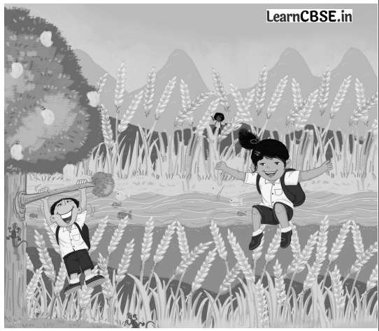
Textbook Illustration (Page 57)
Ravi swinging happily on branches and jumping over canals on his way to school.
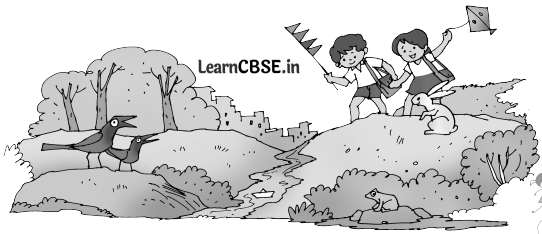
Children observing birds, rabbits, and playing in the open fields.
Summary of the Story / पाठ का सारांश
English Summary: The chapter "Between Home and School" narrates the joyful daily walk of a young schoolboy named Ravi. Instead of taking a bus, Ravi walks through scenic countryside paths, passing by fresh green paddy fields and cool mango groves. He adds playful adventures to his journey by leaping over small canals, climbing trees, swinging on branches, and watching shiny garden lizards resting on stones. Though he pauses briefly to watch passing cycle rickshaws or tractors, he manages his time wisely and always reaches his school right on time!
सरल हिंदी सारांश: यह कहानी रवि नाम के एक छोटे बालक की दैनिक स्कूल यात्रा के बारे में है। रवि हर दिन पैदल ही स्कूल जाता है। उसका रास्ता धान के हरे-भरे खेतों और आम के बगीचों से होकर जाता है। रास्ते में वह खूब मस्ती करता है—छोटी नहरों को फांदता है, पेड़ों पर चढ़ता है, डालियों से झूलता है और पत्थरों पर बैठी गिरगिटों को देखता है। कभी-कभार वह साइकिल रिक्शा या ट्रैक्टर को देखने के लिए रुक भी जाता है, लेकिन वह इतना अनुशासित और समय का पाबंद है कि वह कभी भी देर नहीं करता और हमेशा ठीक समय पर अपने स्कूल पहुँचता है।
Line-by-Line English to Hindi Translation
Ravi reaches school on time every day.
रवि हर दिन समय पर स्कूल पहुँचता है।
He walks to school.
वह पैदल स्कूल जाता है।
He goes through paddy fields and a mango grove.
वह धान के खेतों और आम के बगीचे से होकर जाता है।
On the way, he jumps over canals, climbs trees, and swings from branches.
रास्ते में, वह नहरों पर छलांग लगाता है, पेड़ों पर चढ़ता है, और डालियों से झूलता है।
He watches garden lizards on the stones.
वह पत्थरों पर बैठी गिरगिटों (बगीचे की छिपकलियों) को देखता है।
Sometimes, he stops to see a cycle rickshaw or a tractor pass by.
कभी-कभी, वह साइकिल रिक्शा या ट्रैक्टर को गुजरते हुए देखने के लिए रुकता है।
But he never gets late. He always reaches school on time!
लेकिन वह कभी लेट (देर) नहीं होता। वह हमेशा समय पर स्कूल पहुँचता है!
Vocabulary & Word Meanings (कठिन शब्दार्थ)
| # | Word (शब्द) | Pronunciation | Hindi Meaning (अर्थ) | English Meaning | Sample Sentence (वाक्य प्रयोग) |
|---|---|---|---|---|---|
| 1 | Paddy | /ˈpædi/ (पैडी) | धान / चावल का पौधा | Rice crop growing in fields | The green paddy fields look so pretty. |
| 2 | Grove | /ɡroʊv/ (ग्रोव) | उपवन / पेड़ों का बगीचा | A small group of trees growing together | Birds are singing in the mango grove. |
| 3 | Canal | /kəˈnæl/ (कनाल) | नहर / पानी की नाली | A human-made water channel for fields | Ravi jumps easily over the small canal. |
| 4 | Branches | /ˈbrɑːntʃɪz/ (ब्रांचेज़) | शाखाएँ / पेड़ की डालियाँ | Parts of a tree that grow out from trunk | Monkeys swing from the tree branches. |
| 5 | Lizards | /ˈlɪzərdz/ (लिज़ार्ड्स) | गिरगिट / छिपकलियाँ | Small reptiles with four legs and long tail | A garden lizard sits quietly on the stone. |
| 6 | Route | /ruːt/ (रूट) | रास्ता / मार्ग | The way from one place to another | This is the shortest route to my school. |
| 7 | Swings | /swɪŋz/ (स्विंग्स) | झूलता है / आगे-पीछे हिलना | Moves back and forth while hanging | The boy swings on the playground rope. |
| 8 | Rickshaw | /ˈrɪkʃɔː/ (रिक्शा) | रिक्शा (तीन पहियों का वाहन) | A light two- or three-wheeled vehicle | The cycle rickshaw carries two kids to school. |
| 9 | On Time | /ɒn taɪm/ (ऑन टाइम) | समय पर / पाबंद (Punctual) | Not being late; reaching at the right hour | Good students always reach school on time. |
Let Us Speak (आओ बोलें)
At what time do you leave home for school?
(आप स्कूल के लिए घर से किस समय निकलते हैं?)
I leave home for school at 7:45 AM every morning so that I reach school comfortably before the morning assembly at 8:20 AM.
(मैं हर सुबह 7:45 बजे स्कूल के लिए निकलता/निकलती हूँ ताकि 8:20 बजे प्रार्थना सभा से पहले पहुँच सकूँ।)
Do you have fun on your way to school? What fun things do you do?
(क्या आपको स्कूल के रास्ते में मज़ा आता है? आप क्या-क्या मजेदार काम करते हैं?)
Yes, I have lots of fun! I walk with my friends, watch colorful butterflies and birds, count passing bicycles, and sing rhymes together.
(हाँ, मुझे बहुत मज़ा आता है! मैं दोस्तों के साथ बात करते, तितलियाँ व पक्षी देखते और बालगीत गाते हुए जाता हूँ।)
Phonics Practice: Say aloud the words starting with 'ch'
/tʃ/ Digraph Sound ("च" ध्वनि)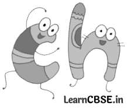
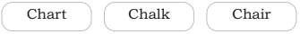
Rule for Kids: When letter 'c' meets letter 'h', they make a special "च" (/tʃ/) sound like in chair, chalk, and chart!
Let Us Write (आओ लिखें)
A Fill in the blanks with 'ch' to complete the sentences (खाली स्थानों में 'ch' भरें):
1. I like to eat upma for lunch.
(मुझे लंच में उपमा खाना पसंद है।)2. Mother packed banana chips in tiffin.
(माँ ने टिफिन में केले के चिप्स रखे हैं।)3. Teacher pointed at the wall chart.
(अध्यापिका ने दीवार के चार्ट की ओर इशारा किया।)4. Teacher writes with white chalk.
(शिक्षक सफेद चाक से लिखते हैं।)5. The teacher sits on the wooden chair.
(अध्यापिका लकड़ी की कुर्सी पर बैठती हैं।)B Circle the things that Ravi sees on his way to school (रवि रास्ते में जो देखता है उन पर गोला लगाओ):
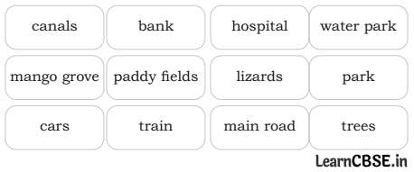
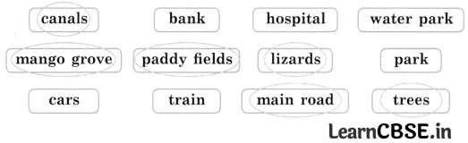
What Ravi Sees (सही उत्तर - गोला लगाएँ):
✓ Canals (नहरें) · ✓ Mango grove (आम का बाग) · ✓ Paddy fields (धान के खेत) · ✓ Lizards (गिरगिट) · ✓ Trees (पेड़)
What Ravi Does NOT See (कहानी में नहीं हैं):
✗ Bank · ✗ Hospital · ✗ Water park · ✗ Park · ✗ Cars · ✗ Train · ✗ Main road
C Answer the following questions in simple words (निम्नलिखित प्रश्नों के उत्तर लिखें):
Q1: Name three interesting things you see every day on your way to school.
(रास्ते में दिखने वाली तीन मजेदार चीजों के नाम लिखें।)
- A mother cow feeding her cute little calf.
- Big shady green neem trees with chirping birds.
- The local sweet shop frying hot fresh jalebis.
(1. गाय और उसका बछड़ा, 2. चहचहाते पक्षियों वाले हरे पेड़, 3. गर्म जलेबियाँ बनाती मिठाई की दुकान।)
Q2: Have you ever gone on a long journey? Where did you go and in which vehicle?
(क्या आप कभी लंबी यात्रा पर गए हैं? कहाँ और किस वाहन से?)
Yes, during summer holidays, I went to Lucknow to meet my grandparents. We travelled by train and enjoyed looking at rivers, farms, and bridges!
(हाँ, छुट्टियों में मैं दादा-दादी से मिलने रेलगाड़ी (ट्रेन) से लखनऊ गया/गई थी।)
D Jumbled Letters: Rearrange the letters to make correct words (अक्षरों को सही क्रम में लगाकर शब्द बनाओ):
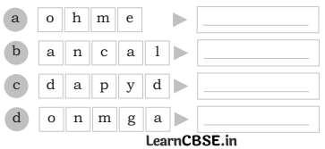
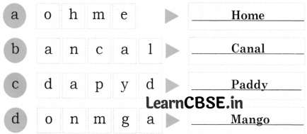
Let Us Draw: Route from Home to School (आओ चित्र बनाएँ)
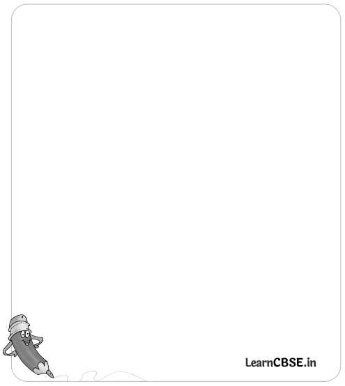
Textbook Prompt (Page 60)"Draw the route from your home to your school."
Let Us Do: Sentences & Transport Project (आओ करें)
A Make Sentences Using the Given Words (दिए गए शब्दों से वाक्य बनाओ):
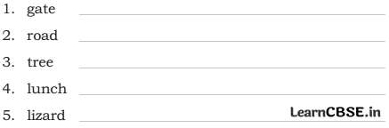
B Project: Vehicles on the Road (सड़क के वाहन - चित्र चिपकाएँ और नाम लिखें):
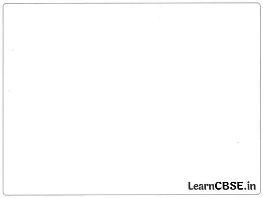
Textbook Project Canvas (Page 61)
Grammar Corner: Action Words (Doing Words / क्रिया शब्द)
Words that tell us what a person or animal is doing are called Action Words (काम बताने वाले शब्द):
Interactive Fun Quiz for Class 2 (अभ्यास प्रश्नोत्तरी)
1. How does Ravi travel to school?
2. What kind of grove does Ravi go through?
3. What animals does Ravi watch on the stones?
4. Which of these words begins with the 'ch' sound?
5. Is Ravi ever late to school?